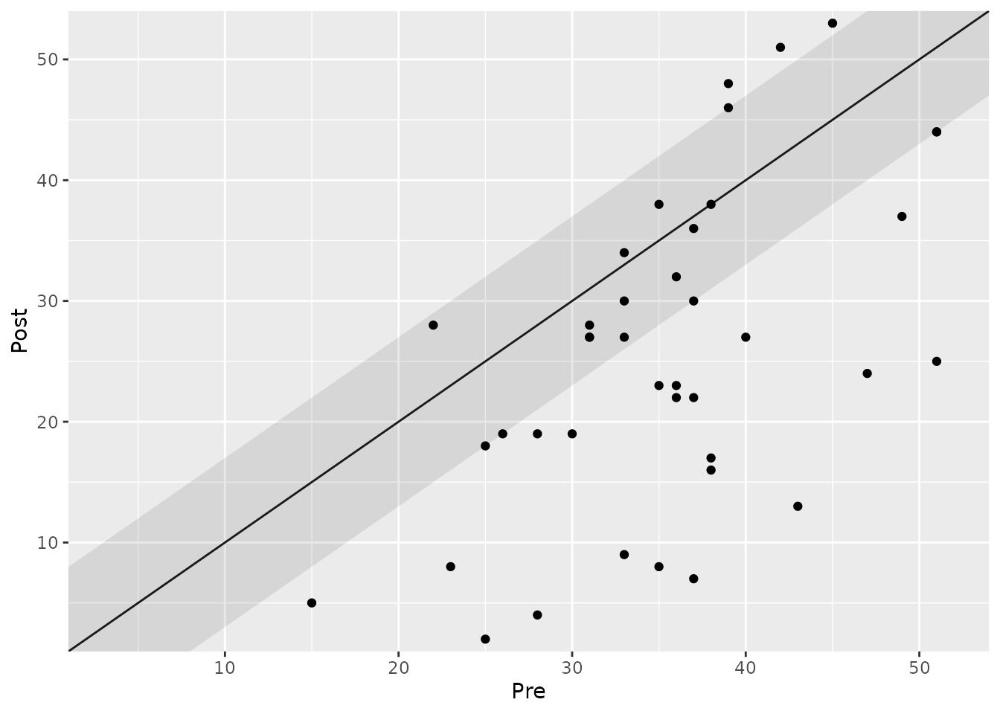
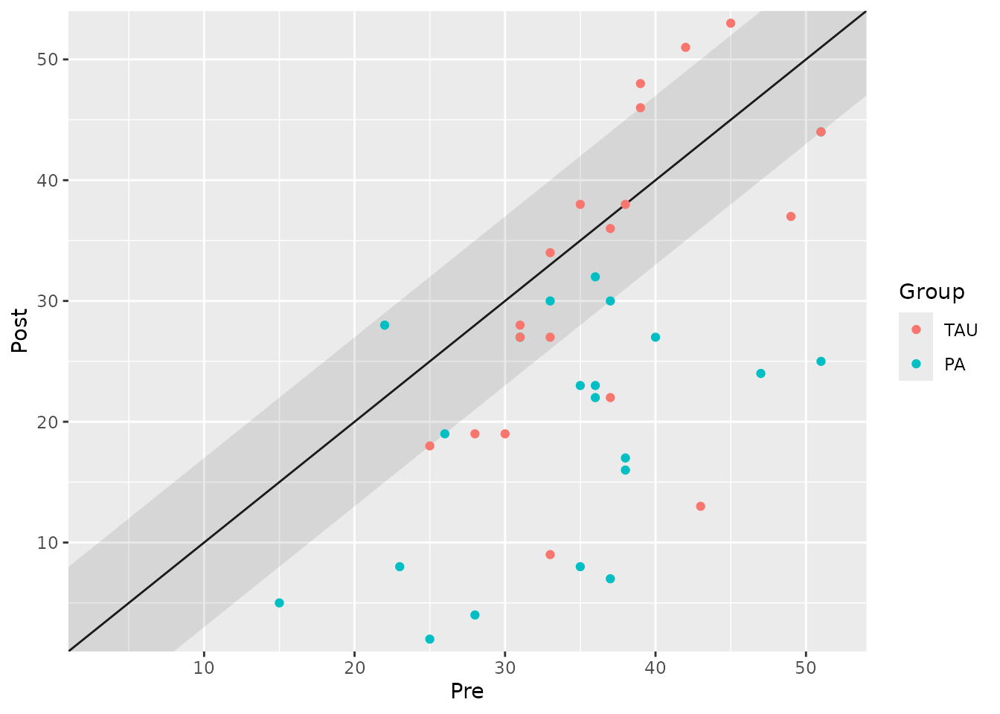
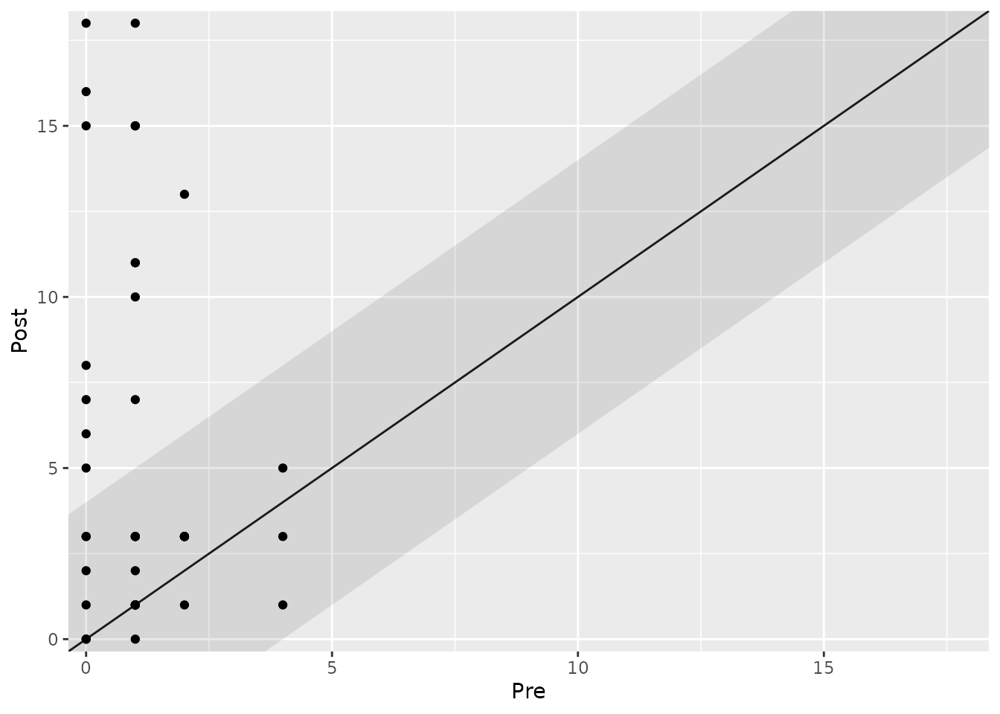

Analyzing Clinical Significance: The Anchor-Based Approach
2025-11-26
Source:vignettes/anchor-based-approach.Rmd
anchor-based-approach.RmdIntroduction
The anchor-based approach is one of the most intuitive methods for evaluating clinical significance. It answers a straightforward question: “Did the patient’s change on an outcome measure meet or exceed a predefined threshold for what is considered meaningful?”
This threshold is known as the Minimal Important Difference (MID). The MID is the smallest change in a score that patients perceive as beneficial. It serves as an external “anchor” to determine if an observed change is practically relevant.
This vignette will guide you through using the
cs_anchor() function to perform both individual- and
group-level analyses using this approach.
Individual-Level Analysis
At the individual level, we classify each participant based on whether their change score crosses the MID.
A Basic Example
We will use the claus_2020 dataset, which contains data
from a study on enhancing the placebo effect of antidepressants. The
primary outcome was the Beck Depression Inventory (BDI-II), where lower
scores indicate improvement. For the BDI-II, a change of 7
points is often considered the MID.
The claus_2020 dataset has four measurements per
patient. For a pre-post analysis, we must specify which time points to
compare using the pre and post arguments.
# Analyze individual change from the first to the fourth measurement
anchor_individual <- claus_2020 |>
cs_anchor(
id = id,
time = time,
outcome = bdi,
pre = 1,
post = 4,
mid_improvement = 7
)
# Print the summary table
anchor_individual
#>
#> ---- Clinical Significance Results ----
#>
#> Approach: Anchor-based
#> MID Improvement: 7
#> MID Deterioration: 7
#> Better is: Lower
#>
#> Category | N | Percent
#> ---------------------------
#> Improved | 25 | 62.50%
#> Unchanged | 11 | 27.50%
#> Deteriorated | 4 | 10.00%The output shows that 62.5% of patients were classified as “Improved” (their BDI-II score decreased by 7 points or more), 27.5% were “Unchanged”, and 10% “Deteriorated”.
Visualizing Individual Change
A clinical significance plot helps visualize these results. Each point represents a patient.
-
Solid Diagonal Line: No change (
pre=post). Points below this line represent improvement for the BDI-II. -
Shaded Area: The zone of “no meaningful change”.
Its boundaries are
post = pre ± MID. - Points below the shaded area: Clinically significant improvement.
- Points above the shaded area: Clinically significant deterioration.
plot(anchor_individual)
#> Ignoring unknown labels:
#> • colour : "Group"
Analyzing by Group
The claus_2020 study included a Treatment as Usual (TAU)
group and a Placebo-Amplification (PA) group. We can analyze the
clinical significance for each group by specifying the
group argument.
anchor_grouped <- claus_2020 |>
cs_anchor(
id = id,
time = time,
outcome = bdi,
pre = 1,
post = 4,
mid_improvement = 7,
group = treatment
)
# Print results by group
summary(anchor_grouped)
#>
#> ---- Clinical Significance Results ----
#>
#> Approach: Anchor-based
#> MID Improvement: 7
#> MID Deterioration: 7
#> N (original): 43
#> N (used): 40
#> Percent (used): 93.02%
#> Better is: Lower
#> Outcome: bdi
#>
#> Group | Category | N | Percent | Percent by Group
#> ------------------------------------------------------
#> TAU | Improved | 8 | 20.00% | 42.11%
#> TAU | Unchanged | 7 | 17.50% | 36.84%
#> TAU | Deteriorated | 4 | 10.00% | 21.05%
#> PA | Improved | 17 | 42.50% | 80.95%
#> PA | Unchanged | 4 | 10.00% | 19.05%
#> PA | Deteriorated | 0 | 0.00% | 0.00%
# Plot results by group
plot(anchor_grouped) The plot clearly shows that more patients in the PA group (yellow points) achieved a clinically significant improvement compared to the TAU group (blue points).
Handling “Positive” Outcomes
Some instruments measure constructs where higher scores are better
(e.g., quality of life). For these, we must set
better_is = "higher". Let’s analyze the who
(WHO-5 Well-Being Index) outcome from the same dataset, assuming an MID
of 4.
anchor_positive <- claus_2020 |>
cs_anchor(
id = id,
time = time,
outcome = who,
pre = 1,
post = 4,
mid_improvement = 4,
better_is = "higher"
)
plot(anchor_positive)
#> Ignoring unknown labels:
#> • colour : "Group" Now, points above the shaded area represent clinically significant improvement.
Group-Level Analysis
The anchor-based approach can also be applied at the group level to
determine if the average change for a group was clinically
meaningful. cs_anchor() uses a Bayesian framework by
default to generate a credible interval for the mean difference.
We set target = "group" to perform this analysis.
Within-Group Analysis
First, let’s assess the average change within each treatment group separately.
anchor_group_within <- claus_2020 |>
cs_anchor(
id = id,
time = time,
outcome = bdi,
pre = 1,
post = 4,
mid_improvement = 7,
target = "group",
group = treatment
)
anchor_group_within
#>
#> ---- Clinical Significance Results ----
#>
#> Approach: Anchor-based (within groups)
#> MID Improvement: 7
#> Better is: Lower
#>
#> Group | Median Difference | Lower | Upper | Ci Level | N | Category
#> ------------------------------------------------------------------------------------------------
#> TAU | -4.24 | -9.12 | 0.62 | 0.95 | 19 | Statistically not significant
#> PA | -13.62 | -18.11 | -9.21 | 0.95 | 21 | Large clinically significant effectThe results indicate that the TAU group’s change was not statistically significant, while the PA group showed a “Large clinically significant effect” because its entire 95% credible interval for the mean change was beyond the MID of -7.
Between-Group Comparison
Perhaps the most common use case is comparing the change in an
intervention group relative to a control group. We can do this by
setting effect = "between". The function will calculate the
difference in change scores between the groups.
anchor_group_between <- claus_2020 |>
cs_anchor(
id = id,
time = time,
outcome = bdi,
post = 4, # Only post is needed here, as we compare change scores
mid_improvement = 7,
target = "group",
group = treatment,
effect = "between"
)
anchor_group_between
#>
#> ---- Clinical Significance Results ----
#>
#> Approach: Anchor-based (between groups)
#> MID (Improvement): 7
#> Better is: Lower
#>
#> Group 1 | Group 2 | Median Difference | Lower | Upper | Ci Level | N 1 | N 2 | Category
#> ----------------------------------------------------------------------------------------------------------------------
#> TAU | PA | -10.23 | -18.28 | -2.75 | 0.95 | 19 | 21 | Probably clinically significant effectThe analysis shows a “Probably clinically significant effect” in favor of the PA group. The average difference between the groups exceeded the MID, but the MID was still within the 95% credible interval.
Summary and Next Steps
The anchor-based approach provides a highly interpretable assessment of meaningful change, but its use depends on having a well-established MID for your outcome measure.
- Use
cs_anchor()for individual-level analysis to classify each patient as improved, unchanged, or deteriorated. - Use
cs_anchor(target = "group")for group-level analysis to assess if the average change was meaningful.
When an MID is not available, other methods are required. The next vignette explores the distribution-based approach, which assesses whether a change is statistically reliable and larger than what might be expected from measurement error alone.